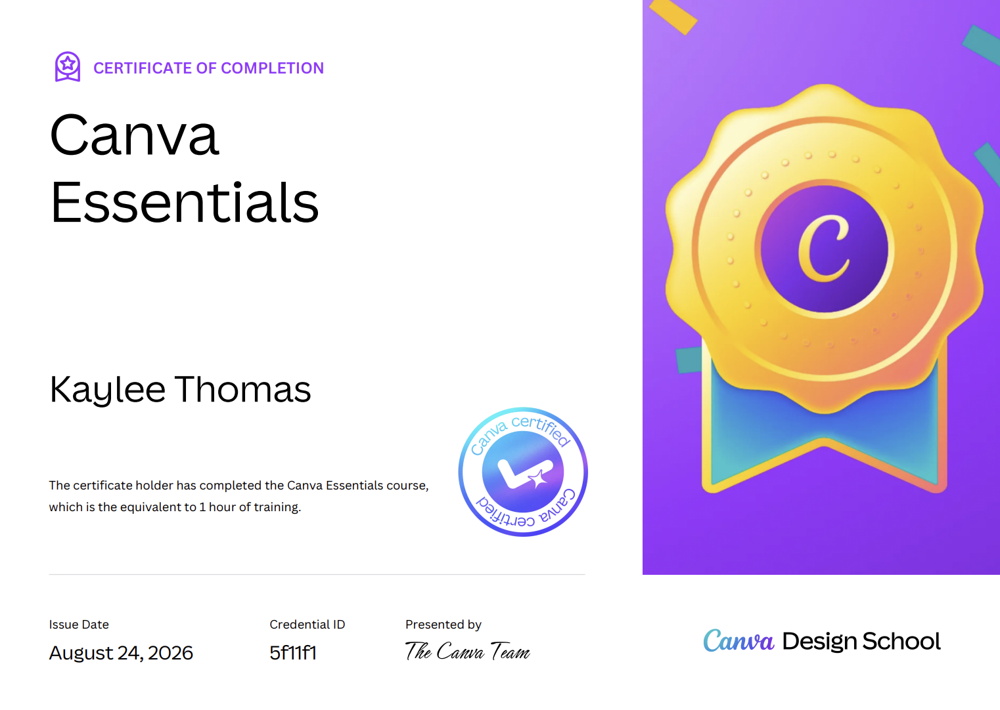
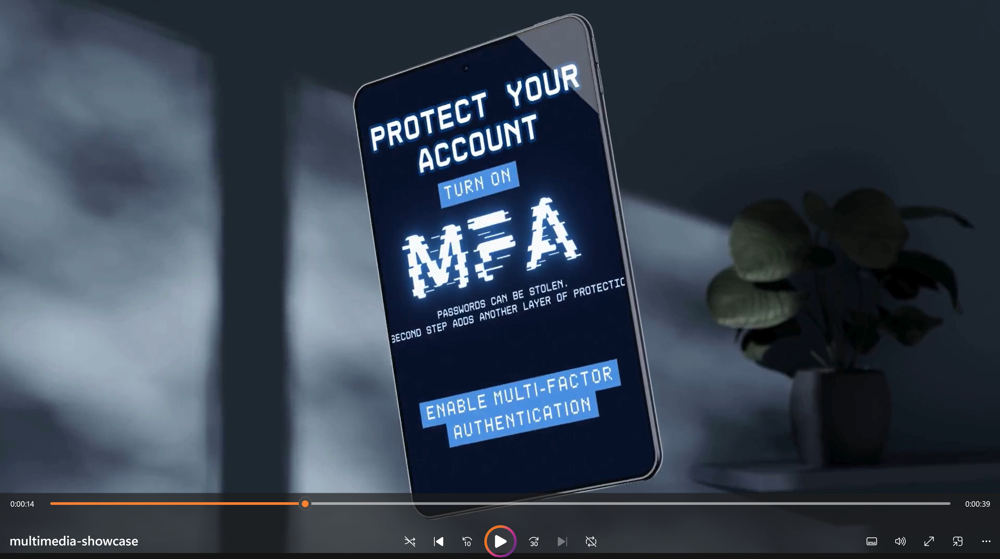

My Creative Journey
My Projects
Explore my multimedia creations, from visual storytelling and digital design to the creative skills I've developed throughout ITE 170.

Unplug and Reset
I created this wellness poster to encourage people to take breaks from their screens and prioritize their well-being. Using simple illustrations, bold typography, and a clean layout, I highlighted three ways to reset: looking away, moving around, and taking time to refocus.

Midnight at the Museum
For my ITE 170 midterm, I created a museum-themed multimedia project featuring a promotional poster and video teaser. I combined AI-generated imagery, storytelling, and video editing to bring the mysterious museum concept to life.
Certifications
Canva Design School
Three certificates earned through Canva Design School.

Capstone Project
My Multimedia Showcase Video
For my ITE 170 video project, I created a multimedia showcase that brought together my creative work from the semester. I wanted to tell a story about creativity, personal growth, and how different forms of multimedia can come together to express ideas. Rather than creating a simple slideshow, I wanted my video to feel engaging and meaningful through music, visuals, and storytelling. One of the biggest challenges was learning how to bring different elements together while maintaining a smooth flow between scenes. Through this project, I developed a greater appreciation for video editing, timing, and visual presentation. What I'm most proud of is seeing my creative work come together into one presentation that reflects the skills I've developed throughout ITE 170.
- Developed a creative concept to showcase my multimedia work
- Combined visuals and music to create an engaging presentation
- Practiced video editing, scene transitions, and timing in Canva
- Strengthened my storytelling and multimedia design skills
Want to see my multimedia work?
My Suno song, video, and the images I created this semester.